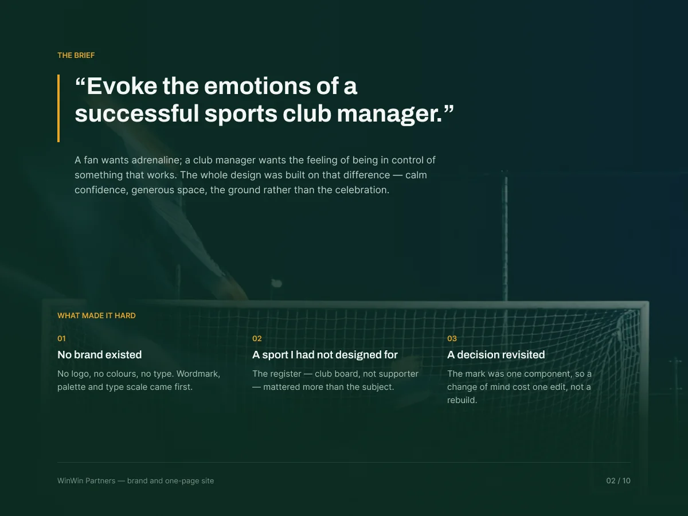
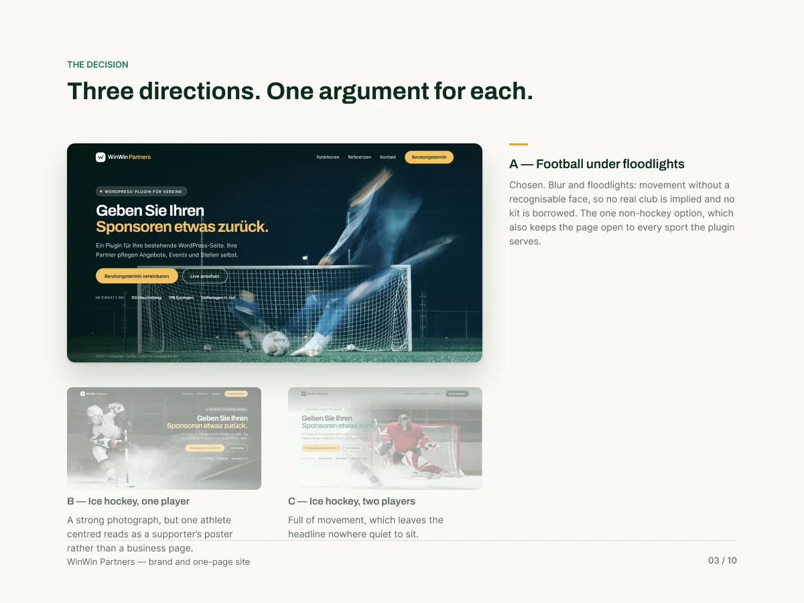
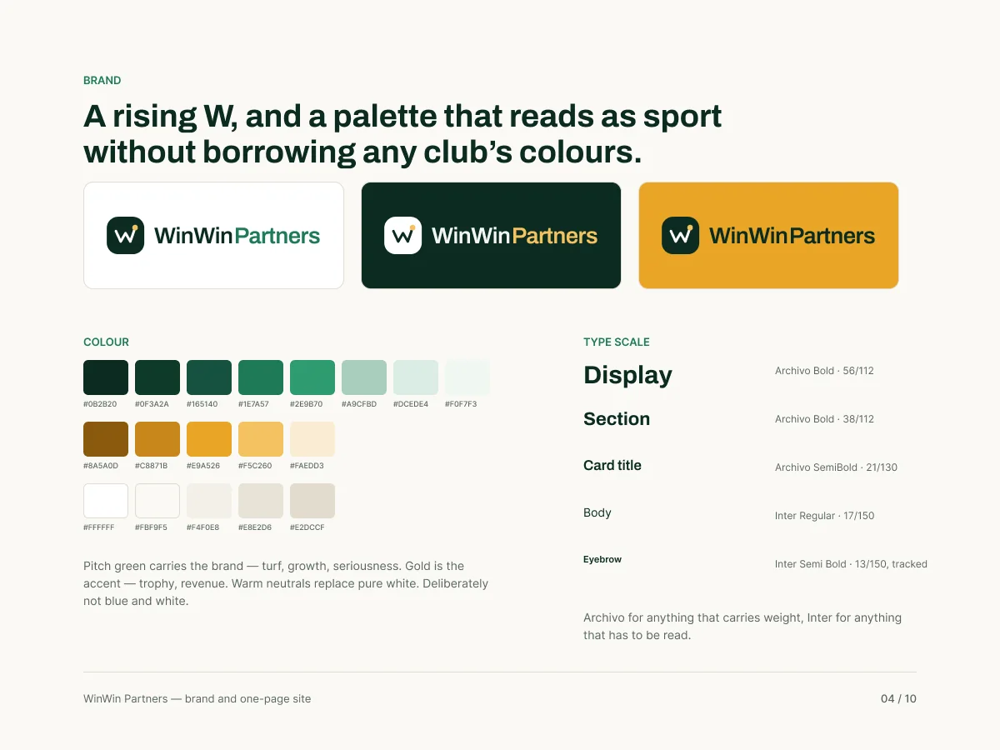
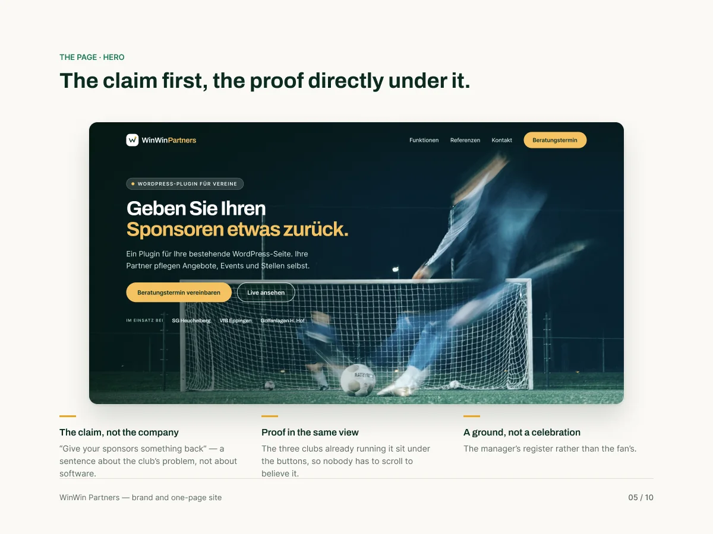
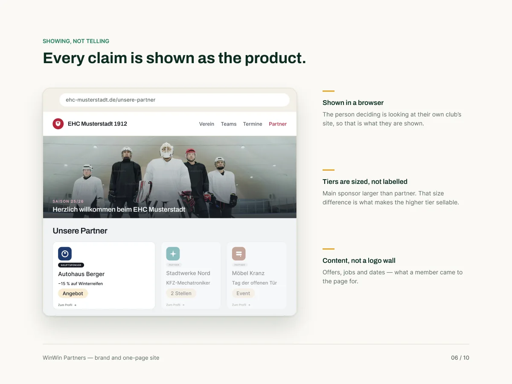
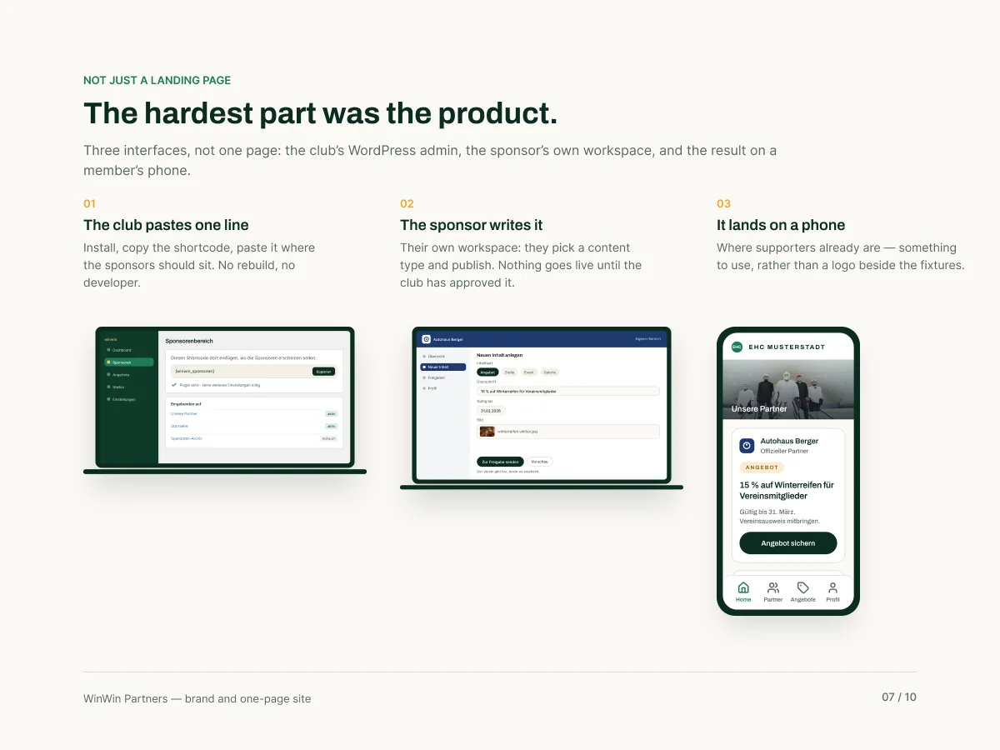
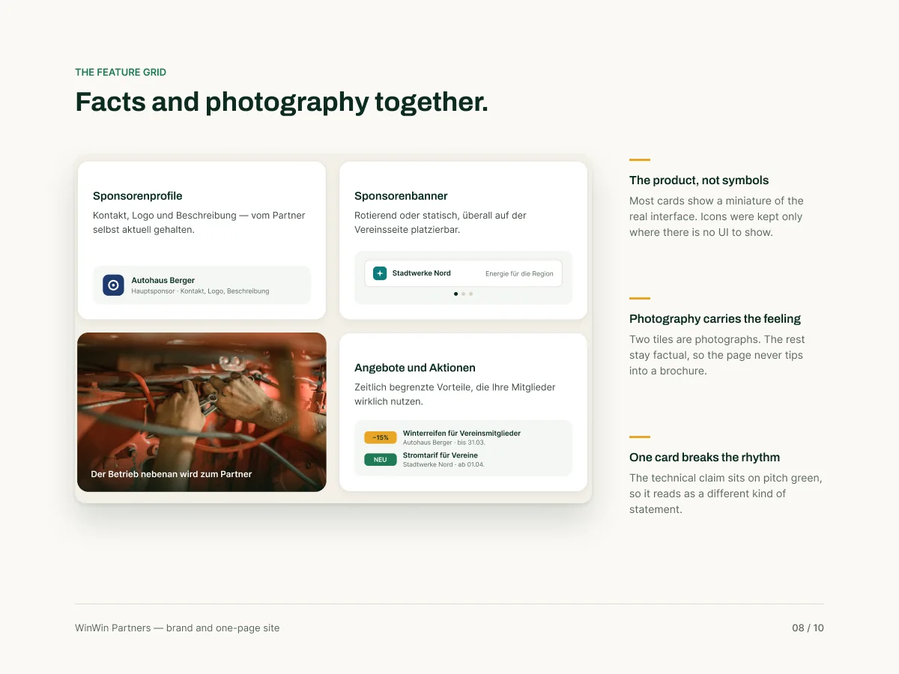
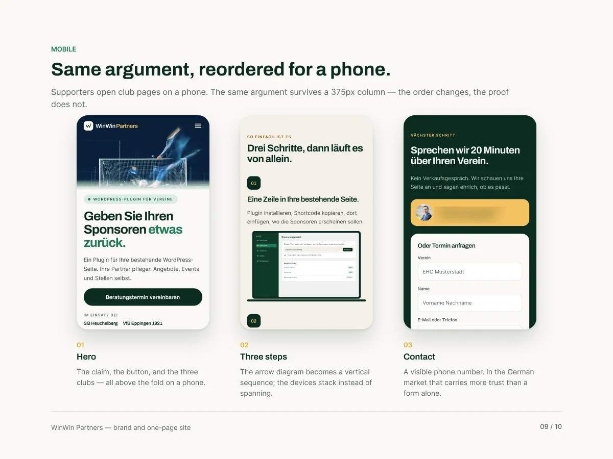
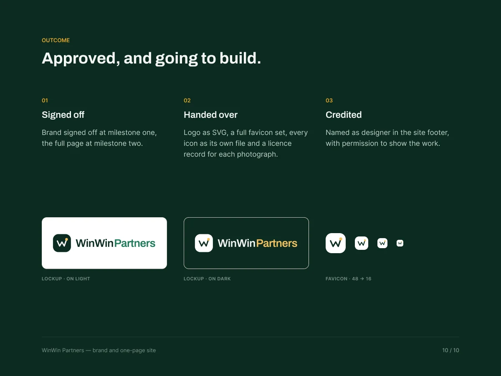

03 · Brand + landing page · Client project
Brand and a one-page site, from one sentence.
WinWin Partners is a WordPress plugin that lets German sports clubs give their sponsors a page of their own. When I started there was no logo, no colour and no photography, only a brief: “evoke the emotions of a successful sports club manager.”
The case in 30 seconds
- The problem
- A new sponsorship SaaS had a name and German copy, but no logo, no colours, no photography, and a placeholder site in exactly the blue and white the brief ruled out.
- What I did
- Designed the brand (a rising W, a pitch-green and gold palette, a two-font type scale), tested three hero directions, then built a one-page site that shows the product instead of describing it, on desktop and phone.
- The result
- Brand signed off at milestone one and the full page at milestone two, handed over with SVG logos, a favicon set and a licence record for every photo. I'm credited in the site footer.
01 — The brief
A fan wants adrenaline. A club manager wants to feel in control of something that works, so the whole page is built on calm, confidence and space.

02 — Three directions
Three hero directions, one argument for each. Football under floodlights won: movement without a recognisable face, so no real club is implied and every sport the plugin serves still fits.

03 — The brand
A rising W, and a palette that reads as sport without borrowing any club's colours: pitch green for the brand, gold for the accent, warm neutrals instead of pure white.

04 — Built to convert
The claim first, the proof directly under it: the call to action and the three clubs already running the plugin sit in the first view, so nobody has to scroll to believe it.

05 — Showing, not telling
Every claim is shown as the product. The person deciding is looking at their own club's site, so that is what they are shown, and the hardest part, the product itself, gets its own explanation.


06 — Facts and photography together
Most cards show a miniature of the real interface. Two tiles are photographs; the rest stay factual, so the page never tips into a brochure.

07 — Mobile
Supporters open club pages on a phone. The same argument survives a 375px column: the order changes, the proof does not, and a visible phone number carries more trust in the German market than a form alone.

08 — Outcome
Approved, handed over and credited.

In short
A brand and a page that sell to the person who signs.
Built for the club manager rather than the fan: calm where a sports site would shout, and proof placed exactly where doubt appears.